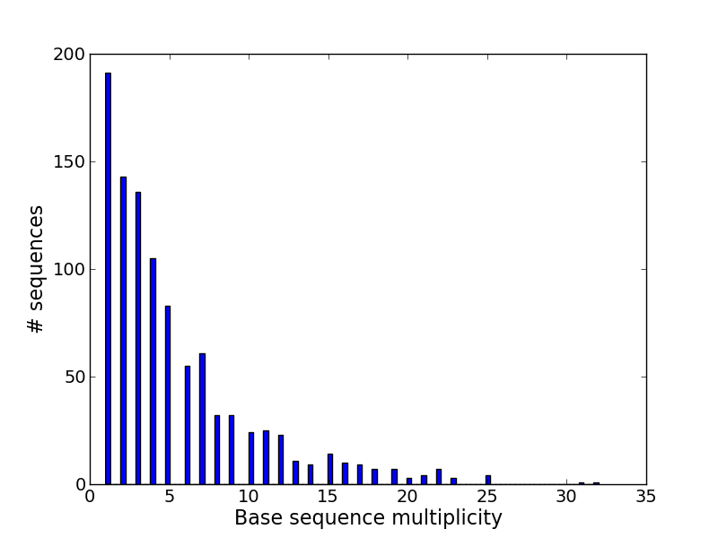

IgRepertoireConstructor is a tool for construction of antibody repertoire from Illumina Ig-Seq library. IgRepertoireConstructor takes as an input immunosequencing reads that cover variable regions of antibodies and returns antibody repertoire constructed from the given reads as its output. 